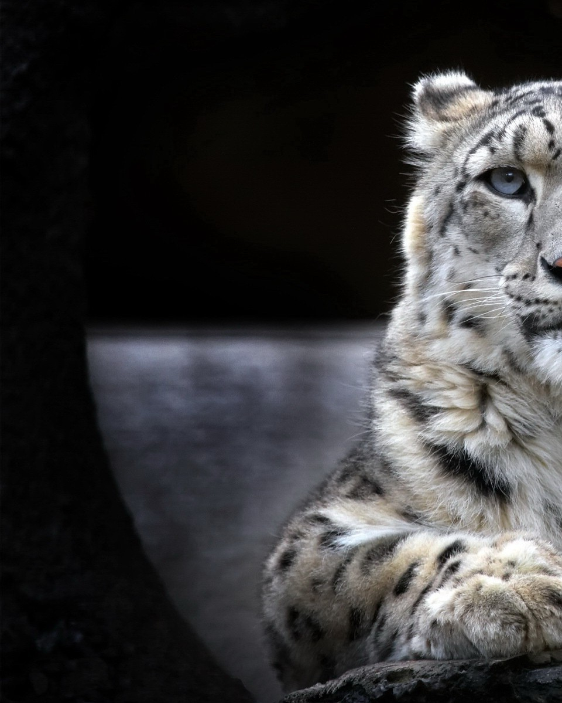

Snow Leopards
Habitat
Regions: Afghanistan, Bhutan, China, India, Kazakhstan, Kyrgyzstan, Mongolia, Nepal, Pakistan, Russia, Tajikistan and Uzbekistan
Numbers
Population: 4.000 to 6.500 Worldwide
Threats
Humans
Help
What can we do to help?

Habitat
Snow leopards live in harsh alpine regions at elevations between 3,000 to 5,000 metres across a total of 12 different countries including Afghanistan, Bhutan, China, India, Kazakhstan, Kyrgyzstan, Mongolia, Nepal, Pakistan, Russia, Tajikistan and Uzbekistan. These big cats have powerful legs and are tremendous jumpers able to leap as far as 50 feet using their long tails for balance and as blankets to cover sensitive body parts against the severe mountain chill.Numbers
The population of snow leopards has been decreasing at an alarming rate due to various factors, including habitat loss, poaching, and climate change. It is estimated that there are only about 4,000 to 6,500 snow leopards left in the wild.Threats
The expansion of human settlement, especially livestock grazing, has led to increased conflict. Herders sometimes kill snow leopards to prevent or retaliate against predation of their domestic animals. Their lives are also threatened by poaching, driven by illegal trades in pelts and in body parts used for traditional Chinese medicine. These cats appear to be in dramatic decline—they've lost at least 20 percent of their population in two decades as a result.Take Action!
- We need to work towards protecting the snow leopard's habitat by promoting sustainable land-use practices, creating protected areas, and limiting infrastructure development in their habitat.
- We need to strengthen law enforcement and increase penalties for poaching and illegal wildlife trade. We also need to raise awareness about the negative impacts of these activities on snow leopards and their ecosystems.
- We need to reduce our carbon footprint and take steps to mitigate the impacts of climate change on the snow leopard's habitat and prey base.
- We need to work with local communities to promote sustainable livelihoods and reduce their dependence on natural resources, such as hunting and grazing, which can have negative impacts on snow leopard habitats.
